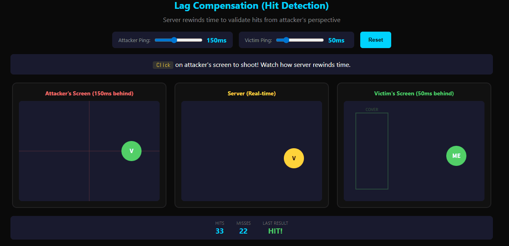

Lag Compensation: 네트워크 지연 보상
개요
온라인 게임을 할 때 "렉 걸린다", "핑이 높다"는 말을 많이 하죠. 하지만 실제로 게임은 어떻게 이 지연을 처리하고, 왜 가끔 벽 뒤에서 죽는 걸까요?
이 문서는 네트워크 지연이 무엇인지부터 시작해서, 게임이 이를 어떻게 극복하는지 질문과 답변 형식으로 차근차근 알아봅니다.
1. 네트워크 지연이란?
질문
온라인 게임에서 내가 키보드로 "앞으로 이동" 키를 눌렀어. 서버는 서울에 있고 나는 부산에서 접속했다면, 이 입력이 서버에 도착하려면 어떤 과정을 거칠까?
답
네트워크를 통해서 몇 ms 걸리지 않을까?
맞습니다. 서울-부산이면 약 10~30ms, 해외 서버면 100~200ms도 걸려요.
그런데 생각해보세요:
문제
왕복 60ms 후에야 내 화면에서 캐릭터가 움직여요. 키 누르고 0.06초 후에 움직이면 플레이어 입장에서 어떤 느낌일까요?
답
약간 답답하고 렉 걸리는 느낌?
정확해요! 60ms도 답답한데, 해외 서버 200ms면 키 누르고 0.2초 후에 움직여요. 거의 게임 불가 수준이죠.
질문
근데 실제로 배틀그라운드나 롤 같은 게임, 해외 서버 접속해도 내 캐릭터는 키 누르자마자 바로 움직이잖아? 어떻게 그게 가능할까?
2. 클라이언트 예측 (Client-side Prediction)
답
클라이언트가 먼저 움직이고 서버한테 알려주는 방식?
정확합니다! 이게 바로 "클라이언트 예측 (Client-side Prediction)"이에요.
클라이언트 예측 핵심
서버 응답 기다리지 말고, 클라이언트가 "나 이렇게 움직일 거야"라고 먼저 예측해서 화면에 보여주는 것.
그래서 키 누르면 바로 움직이는 것처럼 느껴지죠!
왼쪽(OFF): 서버 응답 기다림 - 답답함 / 오른쪽(ON): 즉시 반응 - 부드러움
3. 서버 재조정과 러버밴딩
질문
클라이언트가 "앞으로 이동"했어. 근데 서버에서 확인해보니까 그 타이밍에 나는 적한테 맞아서 기절 상태였어. 클라이언트는 이미 캐릭터를 앞으로 움직여서 보여줬는데, 서버는 "아니, 너 못 움직여"라고 해. 어떻게 처리해야 할까?
답
서버 결과로 되돌려야 하지 않을까?
맞아요! 이게 "서버 재조정 (Server Reconciliation)" 또는 "롤백"이에요.
핵심 원칙: 서버가 절대 권위 (Server Authority)
클라이언트가 뭘 보여줬든, 서버 결과가 "진짜"입니다.
클라이언트 예측이 틀렸으면? → 서버 상태로 강제로 되돌림
질문
이게 플레이어 눈에 어떻게 보일까?
답
좋은 품질의 게임일수록 내가 '안 움직였는데' 갑자기 서버에 의해 강제적으로 돌아가는 건 썩 불쾌한 경험일 것 같은데...
정확해요. 캐릭터가 앞으로 갔다가 갑자기 "휙" 하고 원래 위치로 튕겨져 돌아오는 거예요. 이걸 "러버밴딩 (Rubber-banding)"이라고 해요. 고무줄처럼 튕겨 돌아오는 현상이죠.

클라이언트가 벽을 통과하려 하면, 서버가 거부하고 롤백 발생
좋은 게임일수록 이게 안 느껴져야 해요:
- 클라이언트와 서버가 똑같은 게임 로직 사용
- 예측이 거의 안 틀리게 만듦
- 롤백이 필요해도 부드럽게 보정 (갑자기 텔레포트 X)
4. 다른 플레이어는 어떻게 보일까?
여기까지는 "내 캐릭터" 얘기였어요. 근데 온라인 게임엔 다른 플레이어도 있잖아요.
질문
상대방 캐릭터 위치 정보는 어디서 오나요? 그리고 그 정보도 네트워크 지연이 있을 텐데... 다른 플레이어는 내 화면에서 어떻게 보일까?
답
끊기거나 뚝뚝 끊겨 보이지 않을까?
맞아요. 서버가 초당 30번(30틱) 위치를 보내면, 그 사이사이는 정보가 없어서 뚝뚝 끊겨 보여요.
보간 (Interpolation)
위치 A에서 위치 B로 갈 때, 그 사이를 부드럽게 이어주는 것.
왼쪽(OFF): 뚝뚝 순간이동 / 오른쪽(ON): 부드럽게 이동
5. 총은 맞은 거야, 빗나간 거야?
이제 진짜 제일 어려운 문제예요.
상황
FPS 게임이야. 내가 적을 조준해서 총을 쐈어. 내 화면에서는 분명히 맞았어.
근데 생각해봐:
- 내가 보는 적의 위치 = 100ms 전 서버가 보내준 위치
- 지금 서버에서 적의 실제 위치 = 이미 다른 곳으로 이동함
내 총은 맞은 거야, 빗나간 거야?
답
서버가 과거 시점으로 돌아가서 판정?
정답! 이게 바로 "Lag Compensation (지연 보상)"의 핵심이에요.
Lag Compensation 작동 원리
서버가 하는 일:
- 클라이언트의 핑(지연 시간)을 앎 (예: 100ms)
- 총 쏜 입력이 오면, 100ms 전 과거 상태로 되감기 (Rewind)
- 그 시점 기준으로 맞았는지 판정
- 다시 현재로 복귀
그래서 내 화면에서 맞췄으면, 진짜로 맞은 걸로 처리해줍니다.
3개 화면에서 타겟 위치가 다름. 공격자가 자기 화면 기준으로 쏘면, 서버가 "REWIND"해서 판정
6. 벽 뒤에서 죽는 이유
질문
이거 피해자 입장에서 생각해봐. 나는 분명히 벽 뒤로 숨었어. 근데 갑자기 죽었어. "뭐야?!" 왜 이런 일이 생길까?
답
공격자 화면에선 아직 내가 안 숨었으니까?
정확합니다!
이게 그 유명한 "벽 뒤에서 죽는 현상"이에요.
트레이드오프: 공격자 vs 피해자
게임 개발자는 선택을 해야 해요:
| 방식 | 공격자 | 피해자 |
|---|---|---|
| 공격자 유리 | 내가 맞춘 건 맞음 | 숨었는데 죽을 수 있음 |
| 피해자 유리 | 분명 맞췄는데 안 맞음 | 숨으면 안전함 |
대부분의 FPS는 공격자 유리를 선택해요. 왜?
"쏘는 맛"이 게임의 핵심이니까요.
최종 정리
네트워크 지연 보상 4가지 핵심 기법
1. 클라이언트 예측 - 서버 기다리지 않고 내 캐릭터 먼저 움직임 → 즉각적인 반응감
2. 서버 재조정 - 예측이 틀리면 서버 상태로 롤백 → 서버가 절대 권위
3. 보간 - 다른 플레이어의 움직임을 부드럽게 이어줌 → 끊김 방지
4. Lag Compensation - 공격 판정 시 과거로 되감아서 검증 → 쏘는 맛 보장
| 기법 | 대상 | 목적 |
|---|---|---|
| Client Prediction | 내 캐릭터 | 입력 지연 숨기기 |
| Server Reconciliation | 내 캐릭터 | 서버와 동기화 |
| Interpolation | 다른 플레이어 | 부드러운 움직임 |
| Lag Compensation | 공격 판정 | 공정한 히트 판정 |